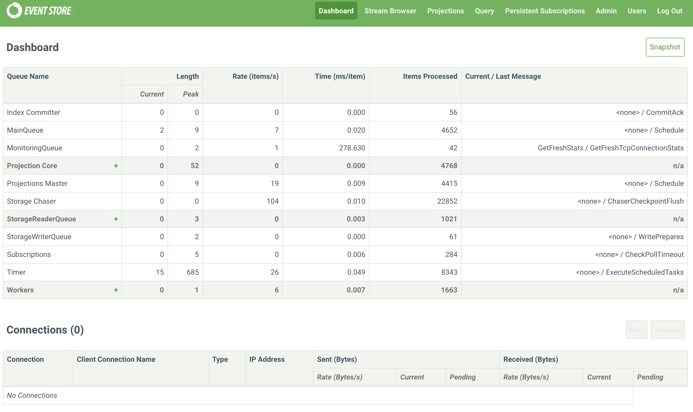
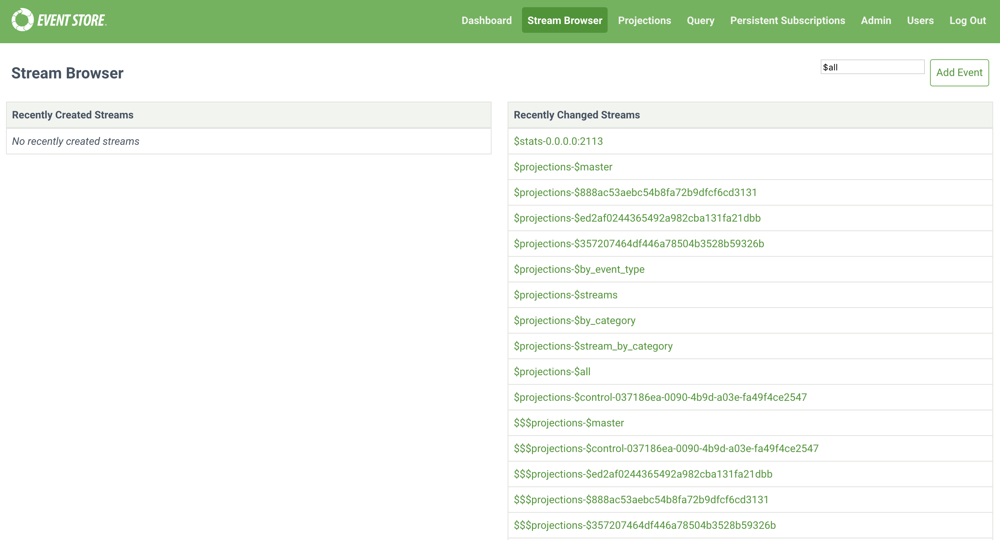
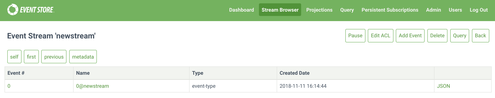
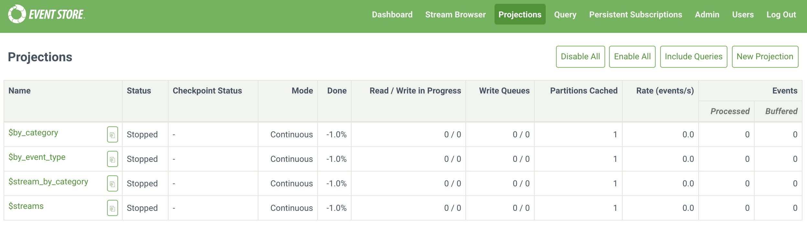
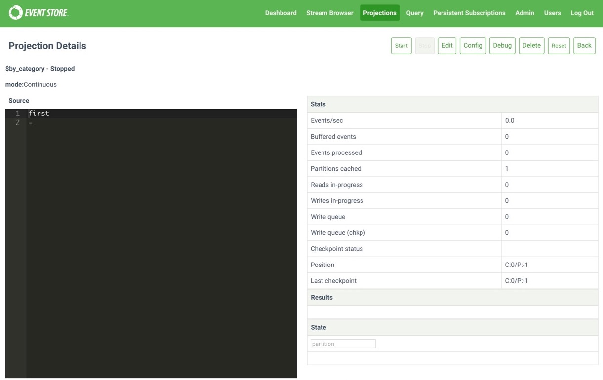
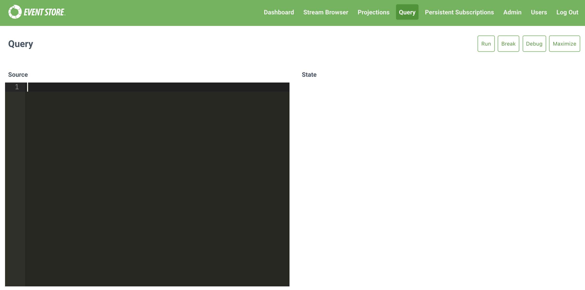
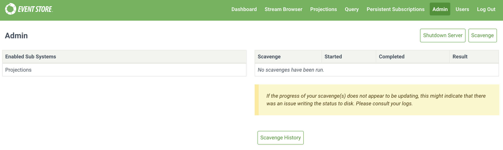
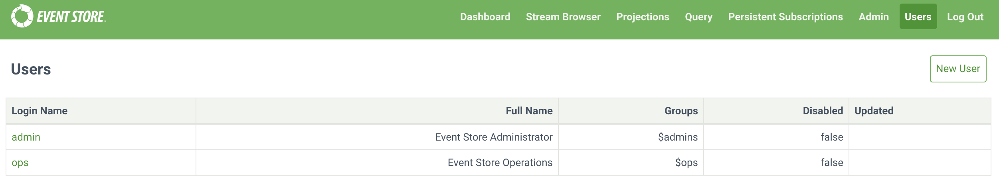

Admin UI
The Event Store Admin UI is available at SERVER_IP:2113 helps you interact with and manage a cluster in a visual way. This guide explains the tabs of the interface and what they do.
Dashboard

The Dashboard tab shows an overview of active queues with associated statistics in the top half. The + icon indicates a queue group, click it to reveal the queues that are part of the group.
The second half of the tab shows active connections to Event Store and information about them.
Click the Snapshot button in the top right to output a snapshot of all queue statistics at the time you clicked the button.
Stream browser

The Stream Browser tab gives an overview of recently created and changed streams, clicking on an individual stream shows details about the individual stream.
Event stream 'streamname'

Each individual stream shows pages of the events in a stream with an overview of the event. Click the Name to see the EventId, and JSON to the see the event data. The buttons above change depending on what you are viewing in the interface. The Back button takes you to the parent screen.
The buttons on the top right when you are viewing an event stream are:
- Pause: Stop showing events arriving into this stream.
- Resume: Resume showing events arriving into this stream.
- Edit ACL: Edit the access control lists for a stream.
- Add Event: Add a new event to the stream.
- Delete: Delete a stream to the stream.
- Query:
The buttons on the left above the events when you are viewing an event stream are:
- self: Takes you to the overview of the stream.
- first: Takes you to the first page of events in a stream.
- previous: Takes you to the previous page of events in a stream.
- metadata: Shows the metadata of a stream.
- On the metadata screen, click Add New Like This to add a new event to the stream.
Projections

The Projections tab shows system and user created projections defined in Event Store, the buttons above the list do the following:
- Disable All: Disable all running projections.
- Enable All: Enable all stopped projections.
- Include Queries: Toggle displaying queries in the Projections table.
- New Projection: Create a user-defined projection with the Admin UI.
Clicking an individual projection shows further details.

On the left is the projection definition, and on the right, the stats, results and state of the projection. The buttons above the details do the following:
- Start: Start a stopped projection.
- Stop: Stop a running projection.
- Edit: Edit the projection definition.
- Config: Set configuration options for a projection.
- Debug: Opens the debugging interface to debug what effect a projection is having on events.
- Delete: Delete a projection.
- Reset: Reset a projection.
- Back: Returns you to the parent screen.
Query
The Query tab a code editor field where you can create transient and short-lived projections for quick analysis of your event streams.

Persistent subscriptions
The Persistent Subscriptions tab shows an overview of persistent subscriptions configured on streams. The button above the list do the following:
- New Subscription: Create a new subscriptions
Clicking the + icon next to a stream name reveals the subscription name and more buttons. The Back button takes you to the parent screen. :
- Edit: Edit the subscription.
- Delete: Delete the subscription.
- Detail: Shows the subscription configuration options.
- Replay Parked Messages: Replay events in subscription to return state.
Admin

The Admin tab shows sub systems enabled (currently only projections) on Event Store and scavenges run. You can start a new scavenge operation by clicking the Scavenge button, and shut Event Store down by clicking the Shutdown Server button.
Users

The Users tab shows the users defined in Event Store, clicking an individual user shows a JSON representation of that users details.
Log out
Logs you out of the Admin UI interface.